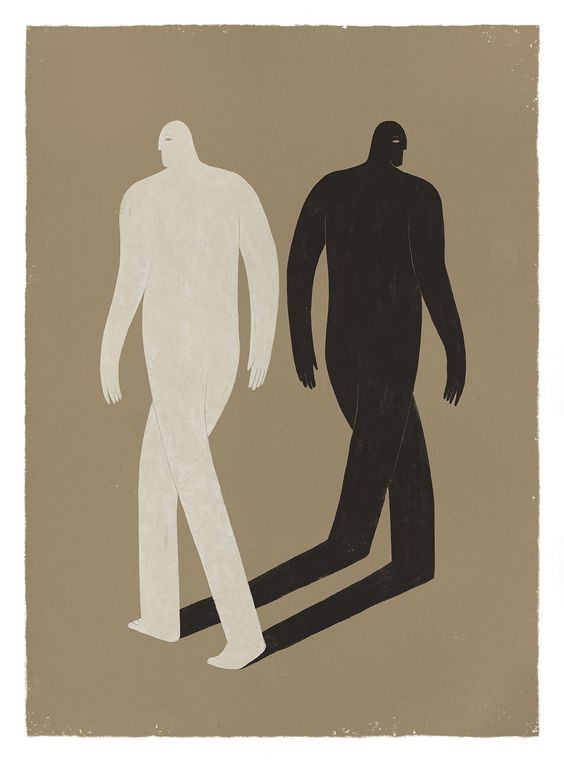

El cúmulo de maltratos, menosprecios y humillaciones genera una dureza y un evidente bloqueo a la empatía, lo cual puede ser la principal dificultad para el desarrollo de un mundo más bonito, sustentable y equitativo.
Uno de mis mayores gustos en el día a día de la vida es hacer cada encuentro con alguien, conocido o desconocido, algo que les pueda alegrar el momento, aunque sea poquito para el resto de su día. Simplemente saludar con una sonrisa y hacer un poquito de conversación puede ser el cambio.
Durante mucho tiempo no pude entender por qué otras personas no tienen ese mismo gusto, y ahora entiendo que el factor de mi propio privilegio también tiene que ver. Me explico: en nuestra sociedad no a todas las personas nos tratan igual. Las mujeres pueden vivir acoso o por lo menos insinuaciones muy desagradables; en esos casos, el ser amable ha dado justificación para algunos hombres. Otras personas por tema de raza o clase, sea de aspecto físico o forma de presentarse, pueden vivir discriminación, menosprecio, abuso, agresión o simplemente la falta de que puedan tener el mismo servicio en una tienda, por ejemplo. Naturalmente, al vivir estos tratos, se presentan ante el mundo de manera defensiva, demandante, exigente e incluso es probable que replique la agresión que vive contra otra persona, o de otra manera aprenden cómo compensar y contrarrestar para defender sus necesidades humanas; es decir; el menosprecio y la discriminación se ha convertido en un camino hacia la no felicidad personal y hacia la segmentación social, que de inmediato no se mira y, sin embargo, se siente.
Dicen que en los primeros años de infancia la niña o niño forma una relación con el mundo que es de una de dos maneras: el mundo es un lugar amigable con el que puedo interactuar de forma abierta y con confianza o el mundo es un lugar en que hay que cuidarse, protegerse del mal prevalente en el mismo. Este trato lo pensamos como resultado de la vivencia en casa: En parte es cierto, pero por raza o clase -aunque la experiencia es que “aquí en casa estás a salvo” (que muchas veces no es cierto)- el mensaje es que “allá afuera hay que aprender a defenderse”. Tal vez la distinción se genera en la infancia, pero el resto de la vida se va reforzando la perspectiva. Así que hay una gran cantidad de personas que se aventuran hacia afuera con el escudo puesto.
Algo que es más sutil: no todos estos menosprecios necesariamente parecen agresiones; a veces es condescendencia. Todas esas veces que decidimos “para” las personas en lugar de “con” las personas, esas veces que creemos saber mejor que ellos sobre su propio bien; puede ser la historia que hemos escuchado tantas veces cuando alguien le “ayuda” a alguien más y la persona no aprovecha la ayuda o abusa de la ayuda. Esas veces que decimos “malagradecido”. Eduardo Galeano hablaba de la diferencia entre la caridad y la solidaridad: “La caridad es vertical y se práctica de arriba hacia abajo, humilla a quien la recibe…” No creo que nadie agradece la humillación. Tenemos que entender que cuando estamos en nuestra posición de representante de una fundación o asociación o empresa, llevamos ese bagaje que no desaparece tan fácilmente; somos, para muchas personas, parte de “aquellos” que les humillan a través de la ayuda o la supuesta ayuda.
Pero quiero ir un paso más. A veces, de maneras invisibles para nosotros, seguimos siendo aquellos que los humillan; cada vez que decimos hay que “educarlos”, cada vez que pensamos que somos los que sabemos cuál es la solución, que sabemos lo que necesitan saber y hacer.
Además de ver hacia dentro de nosotros observando nuestros prejuicios y puntos de interpretación, también es importante ver lo sistémico y estructural. Damos un ejemplo: “La asistente de mostrador que no quiere dar una cotización por escrito a la indígena de Telixtac”. No es la asistente la mala persona que discrimina, incluso podés argumentar que no es ni el gerente ni la tienda que trata mal a la gente; podemos argumentar fidedignamente que es un sistema que, desde su estructura más elemental, promueve la discriminación y beneficia de ella, y normaliza la violencia desde lo más básico de esta estructura.
Por eso es tan importante lo que dice la activista Angela Davis: “en una sociedad racista (todas las sociedades en el mundo) no es suficiente no ser racista, tenemos que ser antirracistas”, cuando las estadísticas muestran que el racismo no es una cuestión del pasado, que la realidad de la sociedad, el trato y los beneficios que experimentan las personas es drásticamente diferente para unos grupos, clases y razas que para otros. Intentar argumentar que la raza no es un factor actualmente, que “todos pueden salir adelante”, no solamente es una mentira: es una forma de no ver al otro, una anti-empatía que menosprecia su experiencia de vida y genera una barrera que imposibilitaría crear una nueva relación. Como dijo Van Jones, “es rara la persona blanca que tiene la capacidad de abrirse y sentir el dolor de las personas negras; se necesitan personas con una práctica espiritual profunda”.
¿Qué hacer? Lo primero, sencillo -y no a la vez-, es observar nuestros prejuicios y reacciones. Cuando no nos saludan, cuando nos ponen mala cara, cuando nos contestan cortante recordemos de nuestro privilegio y agradecemos nuestra propia resiliencia. Segundo -y eso también lo dice Van Jones-, hay que permitirnos sentir incómodos y estar bien con esa incomodidad; no taparlo, ni justificarlo, solo sentirlo.
¿Pero en lo estructural? ¿Cómo podemos ayudar a crear una nueva estructura social, un nuevo sistema socioeconómico y político que no esté construido y sostenido sobre la discriminación? ¿Cómo señalar y rechazar las manifestaciones constantes de la discriminación? ¿Cómo hacerlo no como una crítica personal a la “persona racista”, sino un desenmascaramiento del sistema que lo genera?
Da un saludo interno y un buen día aparecerá contigo.